GLICD
Changer le fond d'écran du bureau :
le lien et
le site Xfce.
Le fond d'écran du bureau est défini par défaut avec une image de Debian.
Si souhaité, il est possible de le changer.
- Ouvrir le gestionnaire de paramètres
Simple clic > Applications > Paramètres > Gestionnaire de paramètres

- La fenêtre du gestionnaire de paramètres s'ouvre.

- Simple clic > Bureau
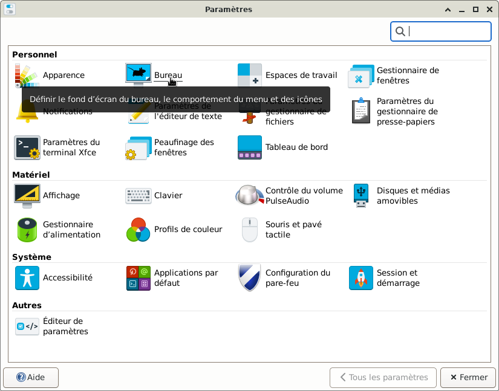
- La fenêtre « Bureau » s'ouvre sur l'onglet « Arrière-plan » (souligné en bleu).
L'image sélectionnée pour le fond d'écran est celle encadrée en bleu.
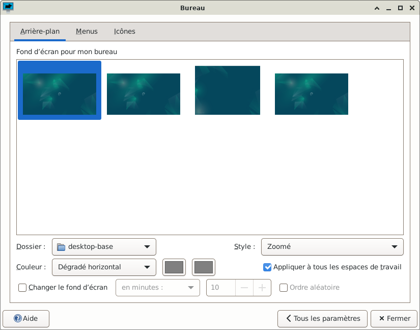
- La fenêtre bureau se compose de 3 onglets :
- Arrière-plan : Permet de configurer l'image en arrière plan du bureau avec différentes configurations.
- Menus : Permet de configurer le comportement des menus.
- Icônes : Permet de configurer les icônes du bureau.
- Simple clic > Menus
La page « Menus » s'affiche et « Menus » est maintenant souligné en bleu.
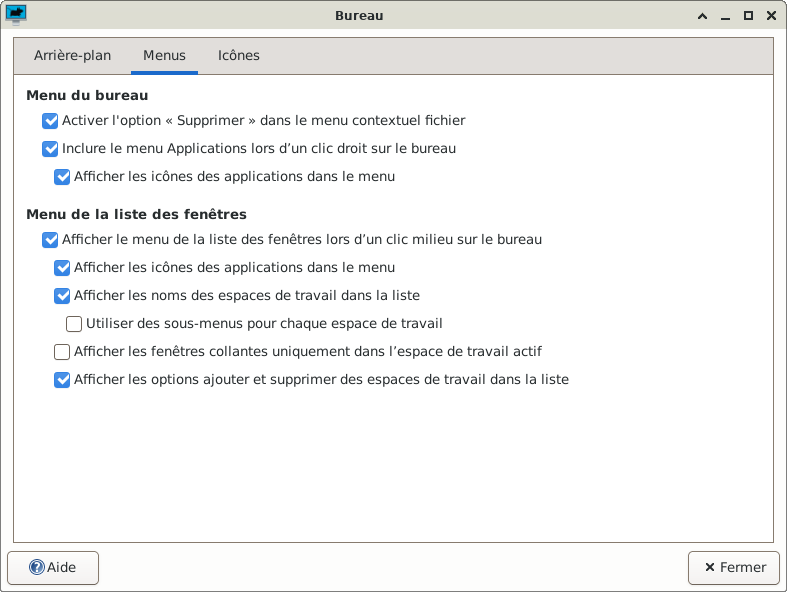
- Revenir à la page « Arrière-plan »
Simple clic > Arrière-plan
- Simple clic > Desktop-base
La notification du bouton est : Choisir le dossier contenant les fonds d'écran.
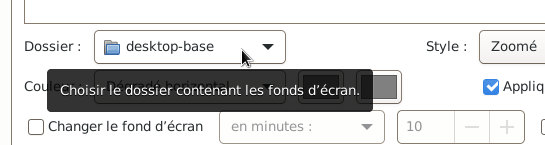
- Une liste déroulante apparaît.
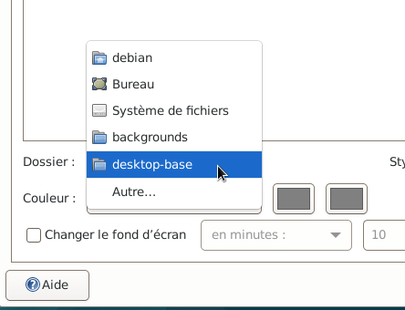
- Simple clic > Autre
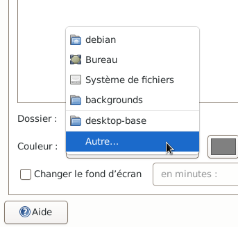
- La fenêtre « Sélectionner un répertoire » s'ouvre.
Par défaut les images du fond d'écran sont dans : usr > share > images > desktop-base
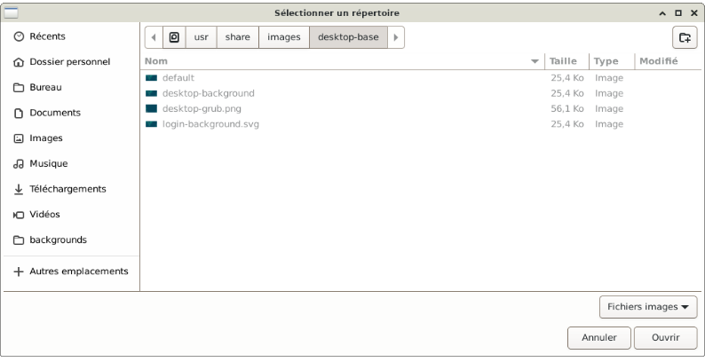
- Dans cet exemple, le dossier par défaut « desktop-base » ne sera pas utilisé.
Un dossier dédié au fond d'écran sera créé.
Fermer la fenêtre, simple clic > Annuler
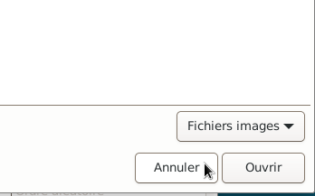
- Créer le dossier nommé « fond_écran » dans le dossier « Images »
Si besoin, pour créer le dossier se rendre ici.
- Après avoir créé le dossier « fond_écran » dans le dossier « Images », revenir à la la fenêtre bureau sous l'onglet « Arrière-plan » (souligné en bleu).
- Simple clic > Desktop-base
La notification du bouton est : Choisir le dossier contenant les fonds d'écran.
- Une liste déroulante apparaît.
- Simple clic > Autre
- La fenêtre « Sélectionner un répertoire » s'ouvre.
- Simple clic > Dossier personnel
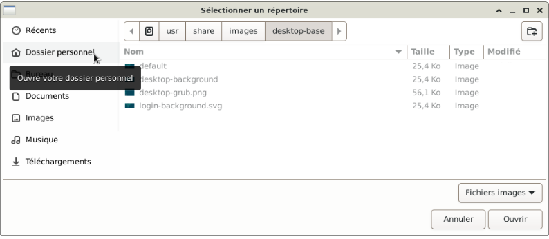
- Double clic > Images
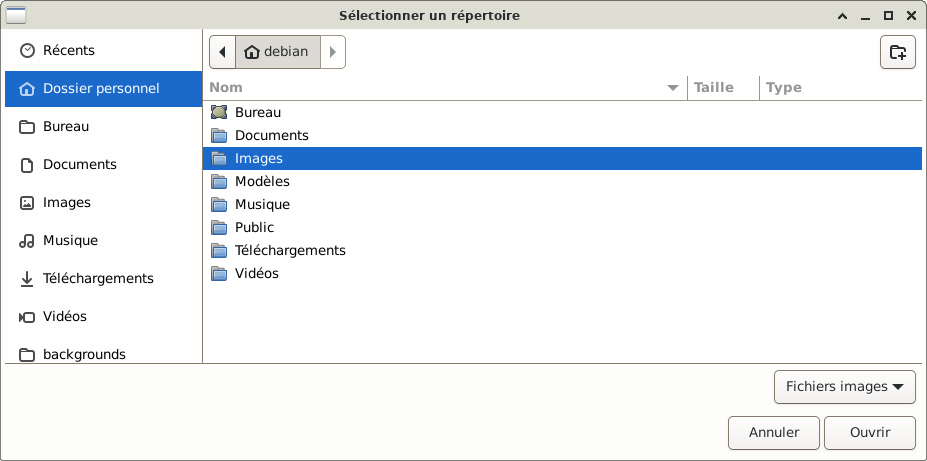
- Double clic > fond_écran (le dossier qui a été créé dans Images)
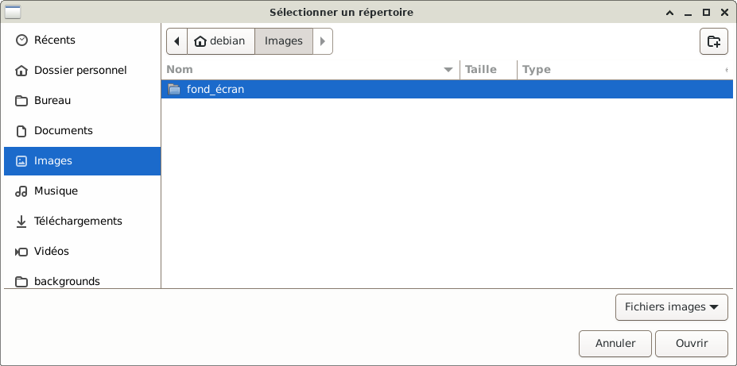
- Ici, les images ou les photos qui ont été ajoutées (elles sont toutes grisées).
Simple clic > Ouvrir
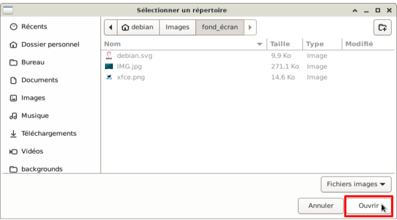
- Simple clic sur l'image désirée en fond écran
Dans cet exemple : xfce.png
L'image sélectionnée est encadrée en bleu.
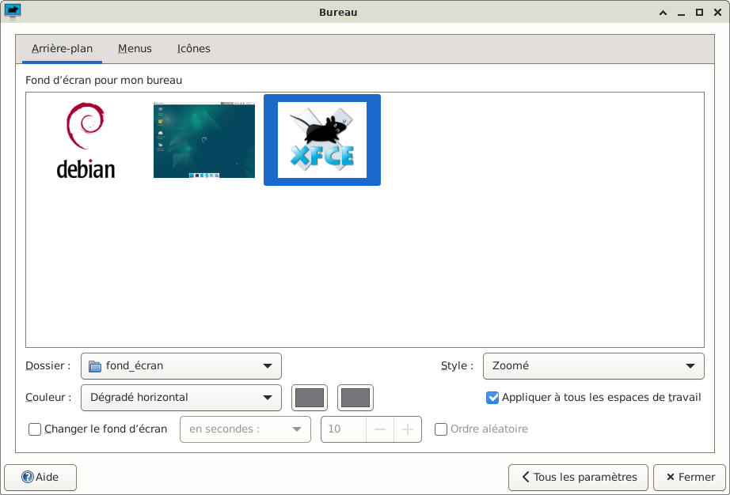
- Après avoir sélectionné l'image avec un simple clic, le résultat est tout de suite visible en fond écran.
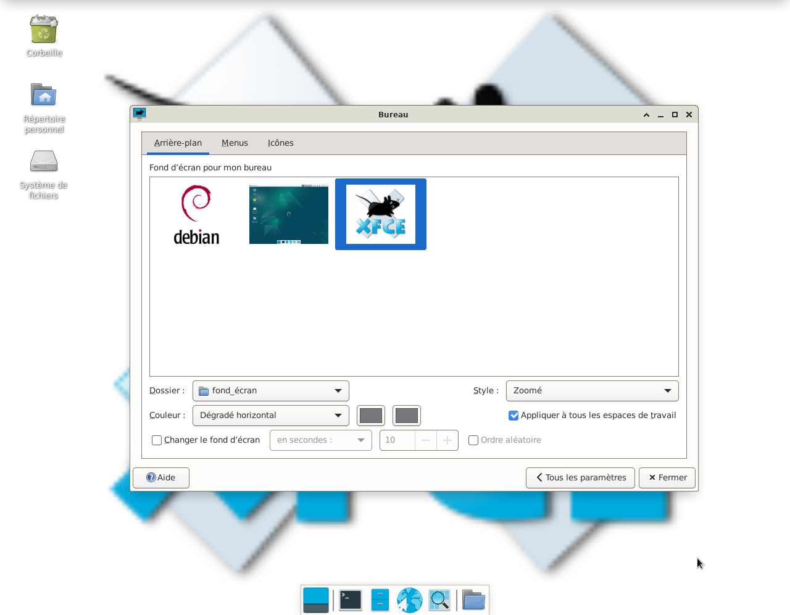
- Pour avoir plus de visibilité sur le fond écran :
Réduire la fenêtre « Bureau » avec un simple clic sur la petite flèche « ^ ».
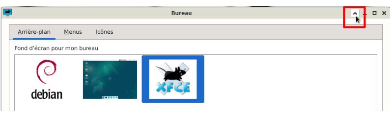
- La fenêtre « Bureau » est réduite
Le fond écran est d'avantage visible.
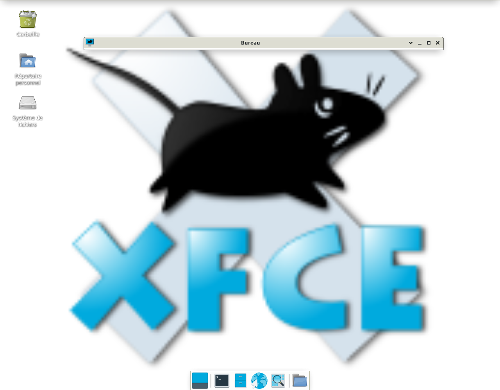
- Agrandir la fenêtre « Bureau » avec un simple clic sur la petite flèche.
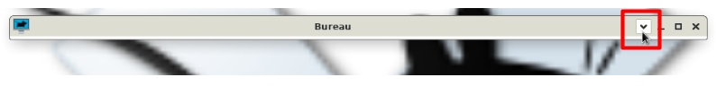
- Plusieurs options sont possibles :
L'option Style
L'option Couleur
L'option Changer le fond d'écran
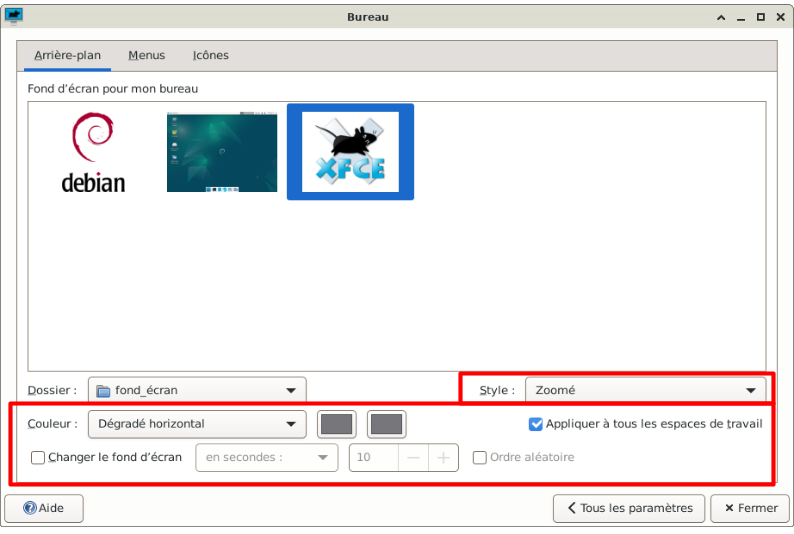

Retour
Informations sur le logiciel libre et
Merci.
Marques déposées :
Ce site ne fait pas partie de Debian, n'est pas produit par le projet
Debian, ni approuvé par le projet Debian.
Ce site n'est pas affilié à Debian. Debian est une marque déposée appartenant
à Software in the Public Interest, Inc.
Contribuer :
Ce site ne fait pas partie de XFCE, n'est pas produit par le projet
XFCE, ni approuvé par le projet XFCE.
Ce site n'est pas affilié à XFCE.
Ce site est juste réalisé par un passionné.